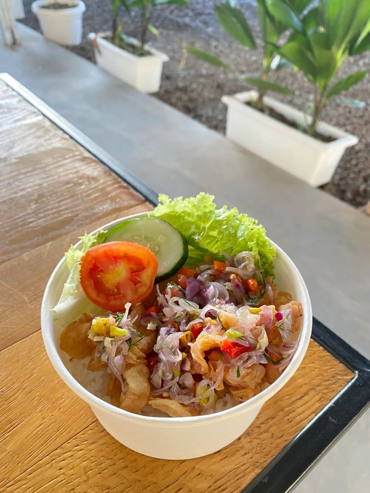

Dimasak hangat setiap hari
Rasa rumahan,
dibuat dengan sayang.
Hidangan nyaman yang mengingatkan pada rumah — dari dapur kami, untuk meja makanmu.
500+ porsi hangat telah sampai
di meja makan keluarga.


2025
Dari dapur kecil kami
Masakan yang terasa seperti pelukan.
Dapur Sayang Food berawal dari satu keyakinan sederhana: makanan yang baik bukan hanya soal rasa, tapi juga perhatian di setiap prosesnya.
Kami memasak seperti untuk keluarga sendiri — memakai bahan segar, resep yang jujur, dan cinta yang selalu jadi bumbu utama.
Cerita kami selengkapnya →Kenapa Dapur Sayang?
Kecil dapurnya,
besar perhatiannya.
Bahan Pilihan
Kami pilih sendiri bahan segar setiap pagi untuk rasa terbaik di setiap porsi.
Dimasak Sepenuh Hati
Resep rumahan yang diracik dengan perhatian, tanpa jalan pintas.
Hangat Sampai Tujuan
Dikemas rapi agar kehangatan masakan tetap terjaga sampai ke rumahmu.
Kata mereka
Rasanya benar-benar seperti masakan ibu di rumah. Hangat, tulus, dan selalu bikin ingin nambah.
Siap menemani harimu
Sudah siap makan
yang hangat-hangat?
Pesan sekarang, biar kami yang urus rasa nyaman di meja makanmu.